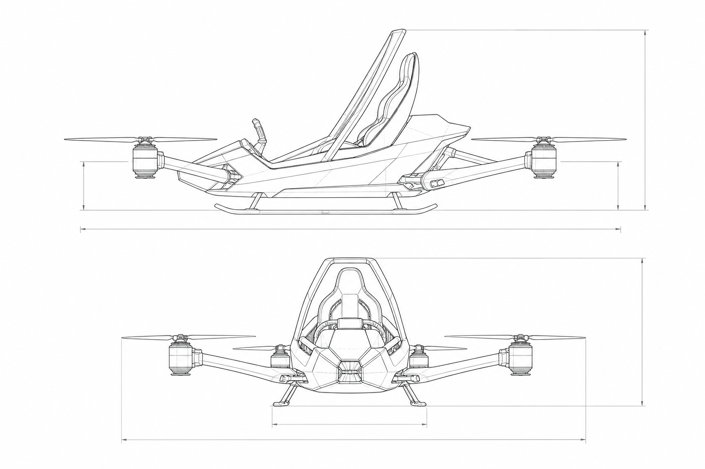

SECTION 05
硬件制造 · 运动类 eVTOL
重庆苍茫无人机科技有限公司 — Champion 系列超轻型纯电 eVTOL 研发与量产，面向国际个人飞行体验市场。
重庆苍茫无人机科技有限公司（Chongqing Cangmang UAV Technology Co., Ltd.）专注运动类超轻型 eVTOL 研发制造，旗下 Champion 品牌以Flight in 3 Minutes 为理念，将复杂航空操控简化为可快速上手的个人飞行体验。
- Champion One — 初代纯电单人飞行平台（2024）
- Champion X8 — 第六代量产机型，2025 年 1 月首批交付
- 自研冗余飞控 · 自动迫降 · 避障 · 三维安全防护
- 文旅观光 · 极限运动 · 竞速飞行 · 科普体验

Champion · 公司与品牌
Champion 系列由重庆苍茫无人机科技有限公司自主研发，探索安全、智能、环保的个人低空飞行体验，推动运动类 eVTOL 产业化落地。
- 中文名：重庆苍茫无人机科技有限公司
- 英文名：Chongqing Cangmang UAV Technology Co., Ltd.
- 成立日期：2024 年 12 月 18 日
- 注册地：重庆市
- 产品品牌：Champion（冠军系列）
- 产品定位：超轻型纯电单人 eVTOL · 空中飞行卡丁（Aerial Go-Kart）
- 研发理念：3 分钟教学即可上手（Flight in 3 Minutes）
Champion One
Champion 初代纯电单人飞行平台，2024 年完成定型，面向高端度假村与极限运动俱乐部等场景。

- 发布时间：2024 年
- 首批海外订单 500 架级，面向中东与东南亚市场
- 超低空贴地飞行体验，降低入门门槛
- 直观操控 — 复杂飞控封装为「一键式」驾驶逻辑
Champion X8
Champion 第六代成熟量产机型，具备完全自主知识产权。2025 年 1 月完成全国首批正式交付，投入文旅场景运营。
- 首批交付：2025 年 1 月
- 外形简约，业界昵称「空中卡丁车」（Aerial Go-Kart）
- 航空铝材 + 碳纤维，轻量化可折叠结构
- 自研冗余飞控，Experience / Player / Auto-Route 三模式
- 意向订单近 500 架，量产排期持续
核心技术参数
Type
Ultra-light eVTOL · Aerial Go-Kart
Seats
Single-seat PAV
Structure
Aviation aluminum + carbon fiber
Max payload
200 kg class
Altitude
5 – 8 m ultra-low band
Flight control
Redundant FCU · obstacle avoidance · auto emergency landing
Training
~3 min to first flight
Power
All-electric multi-rotor eVTOL
应用场景
灵活适配景区、郊野、河道等场景；经简单指导即可体验，无需传统航空驾驶资质门槛。
- Tourism — 低空游览、景区体验
- Sport — 飞行卡丁俱乐部、竞速飞行
- Education — 低空科普与飞行体验
- Urban exploration — 低空出行与应急场景延展
发展历程
- 重庆苍茫无人机科技有限公司成立
- Champion One 初代平台定型，启动海外订单交付
- Champion X8 全国首批量产机正式交付
- Champion X8 投入江西、深圳等地文旅运营；量产排期扩展
成立日期来源：国家企业信用信息公示系统公开检索（2024-12-18）。产品里程碑为 Champion 系列内部研发与交付节点。